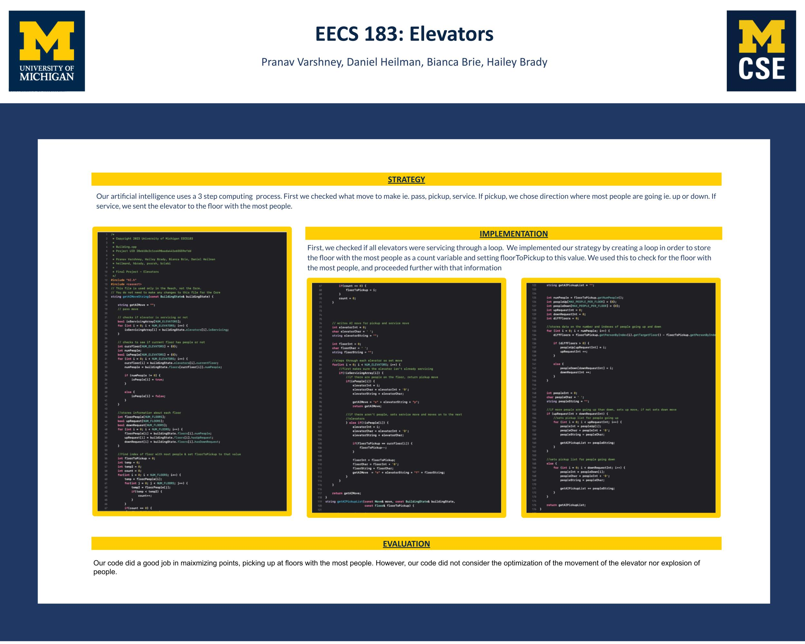

Elevator Game Feb 2023 - Mar 2023
Elevators is a project that dabbles in Game Design, Artificial Intelligence, and designing real-world systems. Using C++, completed an implementation for a game in which the player operates 3 elevators in a busy building, making decisions and servicing requests to keep the people inside the building as happy as possible.
Implemented the core gameplay of the Elevator game including the high-level architecture of the project, and ensuring that each piece built works correctly and fits together into one cohesive experience. Developed an artificial intelligence algorithm to play the game.
